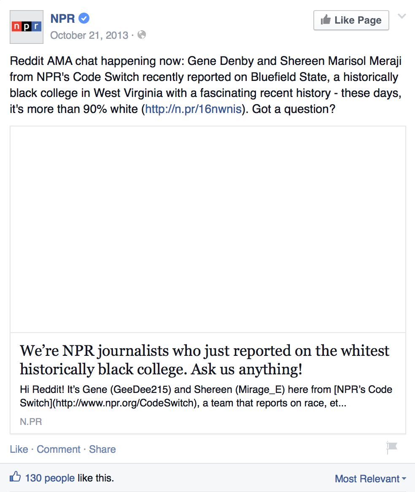
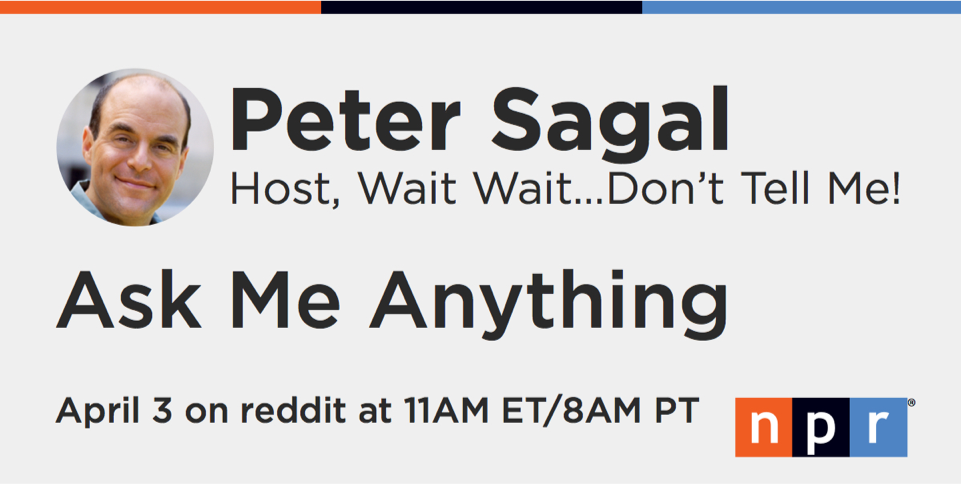
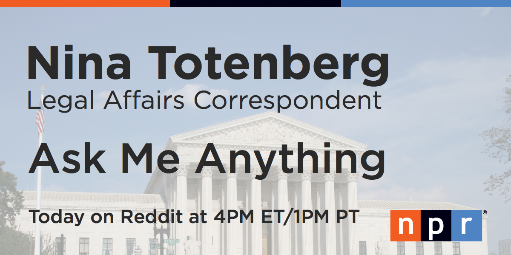
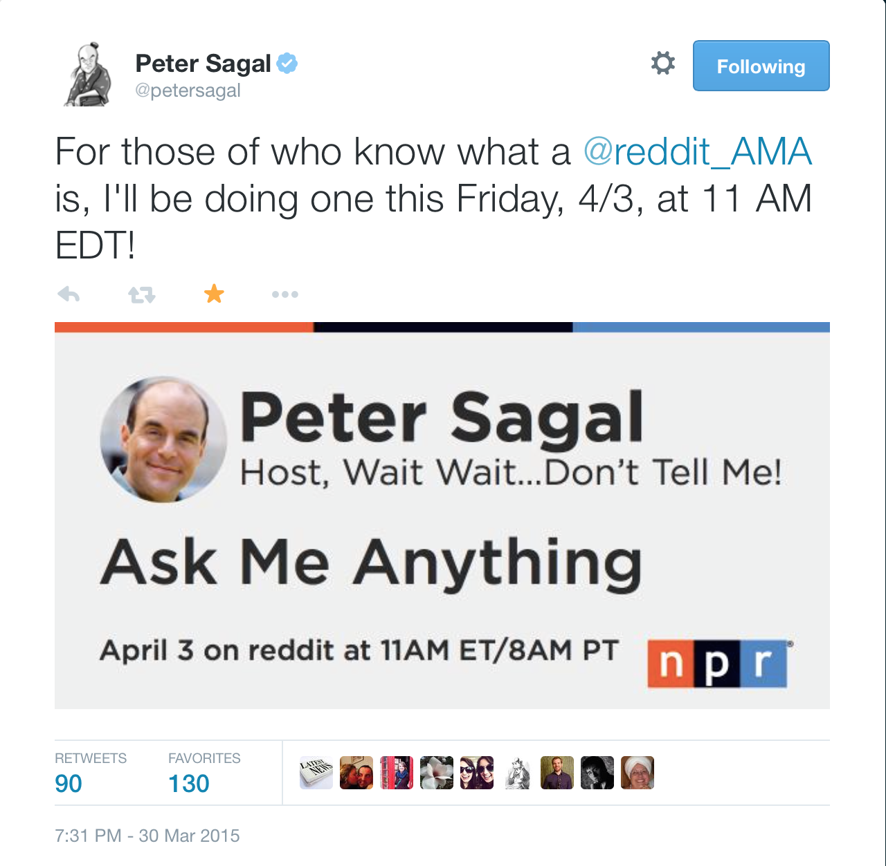

The low-down: I designed a standard card for social media to advertise NPR journalists' AMAs on reddit.
Journalists at NPR often take part in AMAs on reddit. These were great opportunities to connect NPR to the reader. Before, no consistent method existed to advertise these AMAs via NPR's social media accounts.
The Social Media team tasked me to create a card for this purpose. Using Sketch, I mocked up layouts for different name lengths and options for journalists without headshots. For example, if a legal-affairs journalist did not have a headshot, we would include a background image of the Supreme Court.
 Then, I created a Photoshop template and best practice documentation. This documentation included art guidelines to help the Social Media team select appropriate images. The Design and Marketing teams approved the card and is currently in use.
